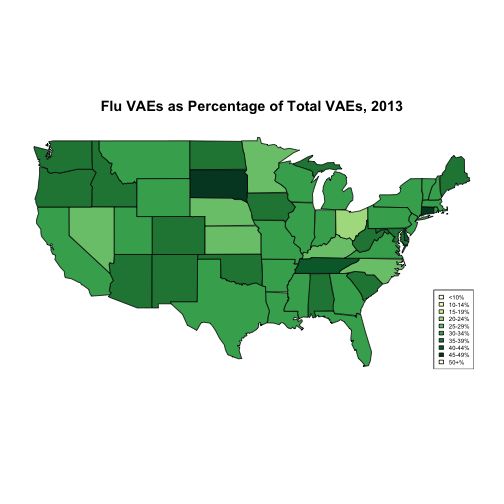

In many production environments, the data you want lives in a relational or SQL database, not in files. Public data is often in files (as they are easier to share), but your most important client data is often in databases. Relational databases scale easily to the millions of records and supply important production features such as parallelism, consistency, transactions, logging, and audits. When you’re working with transaction data, you’re likely to find it already stored in a relational database, as relational databases excel at online transaction processing (OLTP).
R, SQL, and You
Adapting R to relational databases
Thomas Reynolds
Motivation for Project
Motivation for Project
SQL's shortcomings
- Not great for analysis, e.g. linear regression
- Relational format, not discrete file
Motivation for Project
What about R?
- Favorite of data scientists
- Easily extensible for variety of applications
- All work done locally and in-memory
Relational work in R

First Example: Human Bidirectional Promoters
library(DBI)
library(RPostgreSQL)
drv <- dbDriver("PostgreSQL")
host <- "127.0.0.1"
port <- "5432"
username <- "vagrant"
password <- "vagrant"
conn <- dbConnect(drv, dbname = "hg19db", username, password, host, port)
First Example, part 2
allpairs <- dbGetQuery(conn, "SELECT pos.chrom as chrom,
pos.tss as pos_tss, neg.tss as neg_tss,
pos.symbol as pos_symbol, neg.symbol as neg_symbol,
(pos.tss - neg.tss) as spacing
FROM posgene AS pos, neggene AS neg
WHERE pos.chrom = neg.chrom
AND abs(pos.tss - neg.tss) < 1000
ORDER BY chrom, pos.tss")
head(allpairs)
## chrom pos_tss neg_tss pos_symbol neg_symbol spacing
## 1 chr1 762970 762902 LINC01128 LINC00115 68
## 2 chr1 763177 762902 LINC01128 LINC00115 275
## 3 chr1 1167628 1167447 B3GALT6 SDF4 181
## 4 chr1 1243993 1243269 PUSL1 ACAP3 724
## 5 chr1 1260142 1260067 CPTP CPSF3L 75
## 6 chr1 1334909 1334718 LOC148413 CCNL2 191
First Example, part 3
hist(allpairs$spacing, breaks = 21, main = "Bidirectional Promoter Spacing",
xlab = "spacing between + and - TSS")
First Example, part 4
bidir_pair <-(allpairs[allpairs$spacing > 0,])
num_bidir_prom <- nrow(as.table(unique(bidir_pair$pos_tss)))
+ nrow(as.table(unique(bidir_pair$neg_tss)))
## [1] 1888
total_tss <- nrow(dbGetQuery(conn, "SELECT tss from posgene"))
+ nrow(dbGetQuery(conn, "SELECT tss from neggene"))
## [1] 16445
bidir_percent <- (num_bidir_prom / total_tss) * 100
invisible(dbDisconnect(conn))
If we define a bidirectional promoter pair as two promoters on complementary strands within 1000 bp of each others' TSSes, then there are 1896 such pairs in hg19. 11.1385266% of hg19 refGene promoters are bidirectional, according to our analysis.
First Example, Reconsidered
allpairs <- dbGetQuery(conn, "SELECT pos.chrom as chrom,
pos.tss as pos_tss,
neg.tss as neg_tss,
pos.symbol as pos_symbol,
neg.symbol as neg_symbol,
(pos.tss - neg.tss) as spacing
FROM posgene AS pos, neggene AS neg
WHERE pos.chrom = neg.chrom
AND abs(pos.tss - neg.tss) < 1000
ORDER BY chrom, pos.tss")
Requires a great deal of work in PostgreSQL to set up
Second Example: CDC VAERS
library(DBI)
library(RPostgreSQL)
library(dplyr)
library(maps)
library(maptools)
library(RColorBrewer)
vaers <- src_postgres(dbname = "vaccinedb", host = "127.0.0.1", port = "5432",
user = "vagrant", password = "vagrant")
vaersdata <- tbl(vaers, "vaersdata")
vaersvax <- tbl(vaers, "vaersvax")
vaerssymptoms <- tbl(vaers, "vaerssymptoms")
Second Example, part 2
stateevents <- vaersdata %>% select(state, vaers_id)
statetotals <- stateevents %>% count(state) %>% arrange(state)
statefluevents <- vaersvax %>% group_by(vax_type) %>% filter(vax_type ~ "FLU*") %>%
select(vaers_id, vax_type) %>% inner_join(select(vaersdata, vaers_id, state)) %>%
select(state, vaers_id)
stateflutotals <- statefluevents %>% count(state) %>% arrange(state)
abb <- cbind(state.abb)
sname <- tolower(cbind(state.name))
abbtoname <- cbind(abb, sname)
abbtoname <- as.data.frame(as.matrix(abbtoname))
flupercent <- inner_join(stateflutotals, statetotals, by = "state")
flupercplot <- collect(flupercent %>% mutate(percent = (n.x * 100)/n.y))
Second Example, part 3
colors <- brewer.pal(9, "YlGn")
flupercplot$colorBuckets <- as.numeric(cut(flupercplot$percent, c(10, 15, 20,
25, 30, 35, 40, 45, 50, 100)))
fluleg.txt <- c("<10%", "10-14%", "15-19%", "20-24%", "25-29%", "30-34%", "35-39%",
"40-44%", "45-49%", "50+%")
states.matched <- abbtoname$state.abb[match(map("state", plot = FALSE)$names,
abbtoname$state.name)]
colorsmatched <- flupercplot$colorBuckets[match(states.matched, flupercplot$state)]
Second Example, part 4
map("state", col = colors[na.omit(colorsmatched)], fill = TRUE)
legend("bottomright", fluleg.txt, horiz = FALSE, fill = colors, cex = 0.5)
title("Flu VAEs as Percentage of Total VAEs, 2013")

Second Example, part 5
explain(statefluevents)
invisible(dbDisconnect(conn))